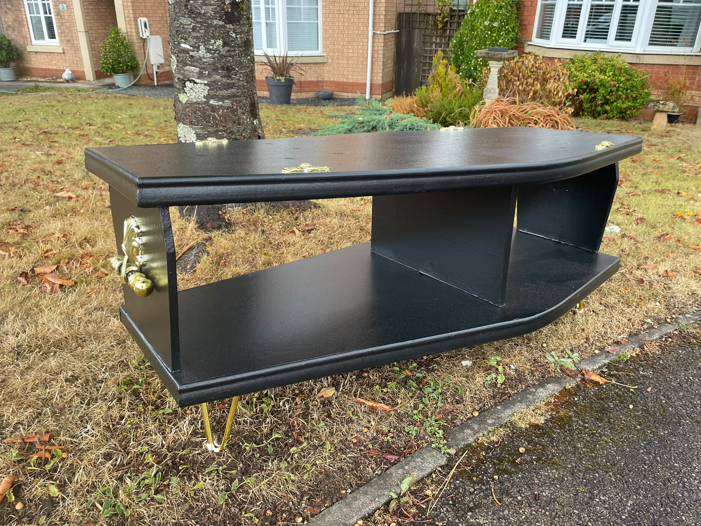
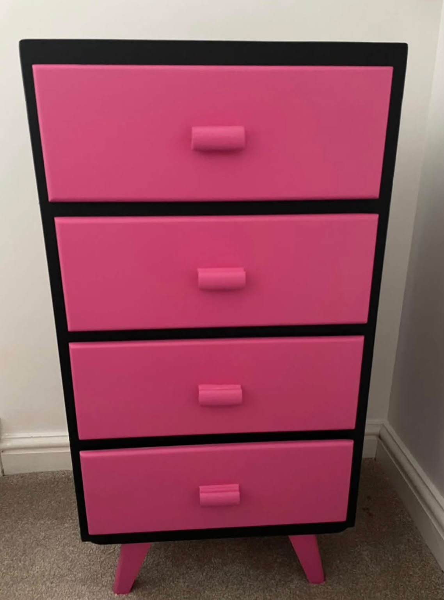
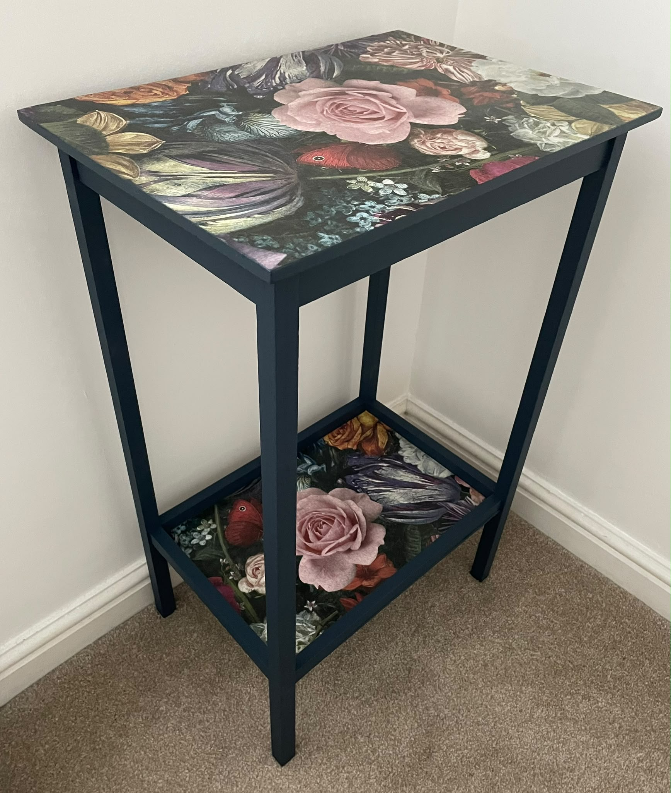

Furniture restoration
Have a piece with good bones but the wrong look? Garry can restore and reimagine furniture you already own.
RESTORE · REIMAGINE
Send Garry a photo of what you have and an idea of where you want to take it. Colour, finish and character can all be discussed before the work begins.






Already own the furniture?
You don't need to know exactly what you want yet. Show Garry the piece and start with a conversation.
Discuss your furniture →